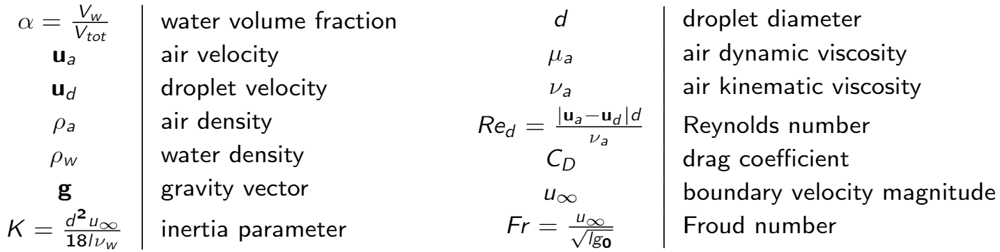

A solver for icing problems

The icing problem consists is foreseeing where the water droplets impact the structure. To do so, there are two different possible approaches. The first one and the most instinctive is the Lagrangian approach, where each droplet would be described with its own trajectory, the equations would describe the movement of the droplets. In this project, the Eulerian approach has been chosen. The idea is to evaluate the water volume fraction at each point of the space.
Here are the variables used to describe the problem.
